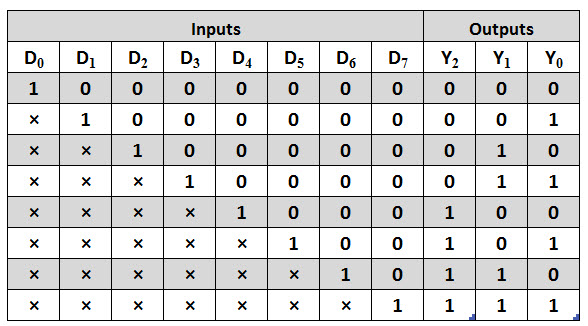
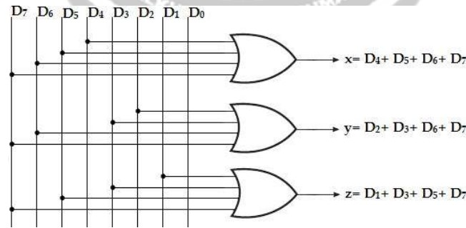

Encoder
8x3 line Encoder:
It has eight inputs (one for each of the octal digits) and the three outputs that generate the corresponding binary number. It is assumed that only one input has a value of 1 at any given time.
The encoder can be implemented with OR gates whose inputs are determined directly from the truth table. Output Z is equal to 1, when the input octal digit is 1 or 3 or 5 or 7. Output Y is 1 for octal digits 2, 3, 6, or 7 and the output X is 1 for digits 4, 5, 6 or 7. These conditions can be expressed by the following output Boolean functions:
X= D4+D5+D6+D7
Y= D2+ D3+ D6+ D7 x= D4+ D5+ D6+ D7
Z= D1+ D3+ D5+ D7
Truth Table:
The encoder can be implemented with three OR gates. The encoder defined in the below table, has the limitation that only one input can be active at any given time. If two inputs are active simultaneously, the output produces an undefined combination.
For eg., if D3 and D6 are 1 simultaneously, the output of the encoder may be 111. This does not represent either D6 or D3. To resolve this problem, encoder circuits must establish an input priority to ensure that only one input is encoded. If we establish a higher priority for inputs with higher subscript numbers and if D3 and D6 are 1 at the same time, the output will be 110 because D6 has higher priority than D3.
Logic Diagram:
Another problem in the octal-to-binary encoder is that an output with all 0‘s is generated when all the inputs are 0; this output is same as when D0 is equal to 1. The discrepancy can be resolved by providing one more output to indicate that atleast one input is equal to 1.